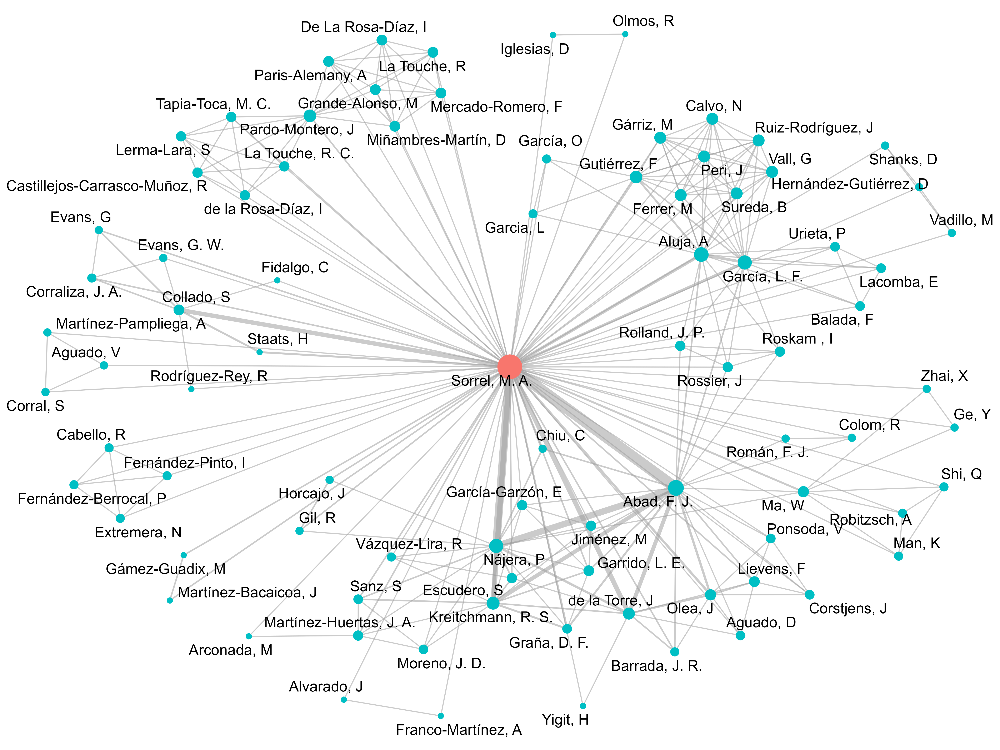

Lab
Network of collaborators:

Lab Philosophy
I want the lab to be a healthy space where science is enjoyable and everyone can grow.
I strive to:
- 🌱 Encourage curiosity and joy in doing science
- ⏰ Allow flexible schedules and respect personal time
- 🗣️ Listen and treat everyone as equals
- 🎉 Acknowledge work, celebrate successes, and embrace failure
- 🤝 Foster collaboration and professional development
I work actively to help create healthier working environments Below is a collection of resources related to my work on this topic:
- Publication: “It Must Have Been Burnout: Prevalence and Related Factors among Spanish PhD Students” (https://doi.org/10.1017/SJP.2020.31)
- Talk: Feeling Burned Out During Your PhD:
Prevalence and Contributing Factors.
Webinar on mental health during the PhD, organized by the CSIC Doctoral Network.
Watch on YouTube - Radio: Appearance on the show Las Perras de
Pavlov (Radio Extremadura), hosted by Olga Ayuso.
Episode: Burning Out While Doing a PhD. With Miguel Sorrel (26/03/2021). Listen on Spotify - YouTube: Participation in the aldemial
channel video titled PhD and Mental Health.
Watch the video - Podcast: Guest on Experimento Demente by
Europea Media and Ciencias Scenio.
Episode: #41 – PhD Stress, Pseudoscientific Doctors, Ismael Serrano, Viruses, and the Coriolis Effect (20/10/2020).
Listen to the episode - Press article: Coverage by the Spanish science news
agency Agencia SINC.
Read the article
Current PhD Students
| Photo | Project |
|---|---|
| Roy La Touche PhD project: Behavioral, Cognitive, and Emotional Bases of Observing, Understanding, and Imagining Motor Actions in Patients with Chronic Musculoskeletal Disorders: Implications for Functional Recovery and Rehabilitation Started: 2024 Co-supervised with Dra. Alba Paris (UCM) |
|
| Diego Iglesias PhD project: Prediction and Generalization in Psychological Research Started: 2022 Co-supervised with Dr. Ricardo Olmos (UAM) |
|
| Raúl Castañeda PhD project: Medical Professionalism in Spanish Residents: Instruments and Measurement Models. Started: 2022 Co-supervised with Dra. Diana Monge (UFV) |
Former PhD & Visiting Students
| Photo | Project |
|---|---|
 |
Scarlett Escudero Research project: Optimal Assembly of Forced-Choice Questionnaires and Empirical Application of Cognitive Diagnosis Models. 2023-2025 Funded by Francisco J. Abad and Carmen García thought the UAM-IIC chair of Psychometric models and applications |
| Pablo Nájera PhD project: Specification and Validation of the Latent Structure in Multidimensional Models. Phd defense: 14/02/2023 Co-supervised with Dr. Francisco J. Abad (UAM) |
|
 |
Rodrigo S. Kreitchmann Improving the Validity of Forced-Choice Assessments Through Questionnaire Optimization Phd defense: 01/04/2022 Co-supervised with Dr. Francisco J. Abad (UAM) |
If you want to learn more about the lab or any of our research lines, feel free to contact me at miguel.sorrel@uam.es.